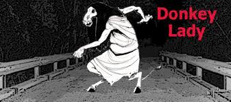

驢女

描述
美國德克薩斯州聖安東尼奧有一個遭到嚴重燒傷的女子，這也導致了她徹底毀容，以及雙手五指黏合在了一起，整個人看起來就像是一個融化的橡皮人，因此面對她異常醜陋的樣貌人們也稱其為驢女。
由於這名女子無法接受毀容後的自己，加上人們對她的排斥，所以她也開始變得對任何人充滿敵意，並最終獨自一人隱居到了聖安東尼奧附近的一處森林裡。相傳這名女子為了報復社會，只要有人經過該處森林都會遭到她的攻擊，尤其在該處森林的一座名為埃爾姆克里克的橋上，這名女子還專門在那設置了陷阱以讓路過的車輛爆胎，然後等司機下來檢查時她便從身後將司機殺死，接著再將屍體和車一同焚毀在森林中。